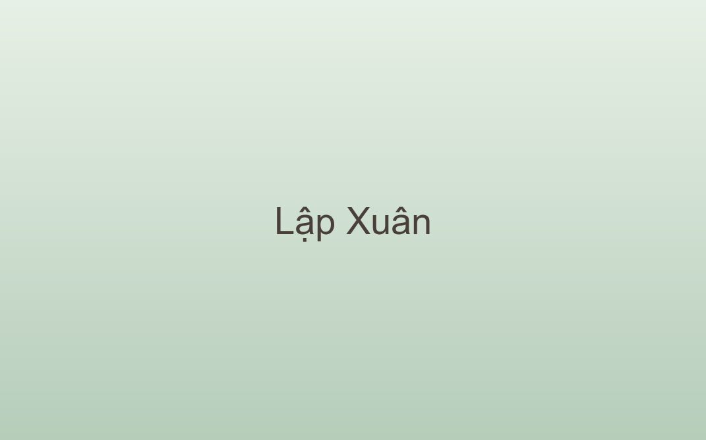

24 tiết khí
Lập Xuân là tiết khí đầu tiên trong năm, đánh dấu sự khởi đầu của vạn vật sau mùa đông dài.

Lập Xuân thường rơi vào khoảng ngày 4 hoặc 5 tháng 2 dương lịch, khi mặt trời đi tới kinh độ 315°. Đây là tiết khí mở đầu trong hệ thống 24 tiết khí của lịch phương Đông.
Một năm khởi đầu từ mùa xuân, một đời khởi đầu từ sự siêng năng.
Không khí lạnh suy yếu dần, độ ẩm tăng cao, mưa phùn xuất hiện nhiều ở miền Bắc. Cây cối bắt đầu đâm chồi dù trời vẫn còn se lạnh vào sáng sớm và đêm khuya.
Mẹo. Độ ẩm cao dễ gây nồm ẩm và các bệnh đường hô hấp — giữ nhà thông thoáng và mặc đủ ấm vào sáng sớm.
Với nhà nông, Lập Xuân là mốc chuẩn bị cho vụ mùa mới: làm đất, chọn giống, gieo mạ. Với đời sống tinh thần, đây là dịp người Việt mở đầu một chu kỳ mới với niềm tin vào sự sinh sôi.